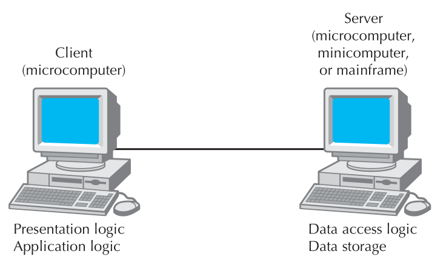
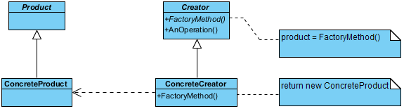
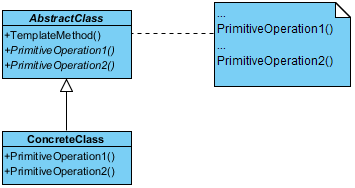

1.System Design
目标：
- To understand why need design
- To know how to elicit design goals
- To know how to specify design output
- To know how to decompose a system
1.1 Introduction
1.1.1 Why is Design so Difficult?
- The solution domain is changing very rapidly
- Design knowledge is a moving target
1.2.1 Analysis Result and System Design Result
We already have
Analysis result:
- A set of nonfunctional requirements and constraints, such as maximum response time, minimum throughput, reliability, operating system platform, and so on
- A functional model, describing the system functionality from the actors’ point of view
- An structural model, describing the entities manipulated by the system
- Behavioral models for each use case, showing the sequence of interactions among objects participating in the use case.
We need to have
System design results:
- Design goals, describing the qualities of the system that developers should optimize
- Software architecture, describing the subsystem decomposition in terms of subsystem responsibilities, dependencies among subsystems, subsystem mapping to hardware, and major policy decisions such as control flow, access control, and data storage
- Boundary use cases, describing the system configuration, startup, shutdown, and exception handling issues.
1.2 Identify Design Goals
Where can we get design goals?
- Nonfunctional Requirements
1.2.1 Design Criteria
Different stakeholders may have different design goals:
- For the client, Low cost, Increased productivity, Backward compatibility, Traceability of requirements, Rapid development, Flexibility, Runtime Efficiency, Reliablity are the important design goals.
- For the end user, Functionality, User-friendliness, Usability, Ease of learning, Fault tolerant, Robustness, Runtime Efficiency, Portability, Good documentation, Reliablity are the important design goals.
- For the developer or maintainer, Minimum of errors, Modifiability, Readability, Reusability, Adaptability, Well-defined interfaces, Portability, Good documentation, Reliablity are the important design goals.
1.Performance criteria
Performance criteria include the speed and space requirements imposed on the system.
- Should the system be responsive, or should it accomplish a maximum number of tasks?
- Is memory space available for speed optimizations, or should memory be used sparingly?
2.Dependability criteria
Dependability criteria determine how much effort should be expended in minimizing system crashes and their consequences.
- How often can the system crash?
- How available to the user should the system be?
- Should the system tolerate errors and failures?
- Are security risks associated with the system environment?
- Are safety issues associated with system crashes?
3.Cost criteria
Cost criteria include the cost to develop the system, to deploy it, and to administer it.
- 成本标准不仅包括设计考虑因素，还包括管理考虑因素。
- 当系统替换旧系统时，必须考虑确保向后兼容性或过渡到新系统的成本。
- 在不同类型的成本之间也存在权衡，例如开发成本、最终用户培训成本、转换成本和维护成本。
- 保持与以前系统的向后兼容性可以增加开发成本，同时减少转换成本。
- Note that cost criteria not only include design considerations but managerial ones, as well.
- When the system is replacing an older one, the cost of ensuring backward compatibility or transitioning to the new system has to be taken into account.
- There are also trade-offs between different types of costs such as development cost, end user training cost, transition costs, and maintenance costs.
- Maintaining backward compatibility with a previous system can add to the development cost while reducing the transition cost.
4.Maintenance criteria
Maintenance criteria determine how difficult it is to change the system after deployment.
- 添加新功能有多容易?
- 修改现有功能有多容易?
- 系统能否适应不同的应用领域?
- 将系统移植到不同的平台需要多少努力?
- 这些标准很难优化和计划，因为很少清楚项目将如何成功，以及系统将运行多长时间。
- How easily can new functionality be added?
- How easily can existing functions be revised?
- Can the system be adapted to a different application domain?
- How much effort will be required to port the system to a different platform?
- These criteria are harder to optimize and plan for, as it is seldom clear how successful the project will be and how long the system will be operational.
5.End user criteria
End user criteria include qualities that are desirable from a users’ point of view, but have not yet been covered under the performance and dependability criteria.
- 软件是否难于使用和学习?
- 用户能否在系统上完成所需的任务?
- Is the software difficult to use and to learn?
- Can the users accomplish needed tasks on the system?
6.Design goal trade off
设计目标的权衡
1.2.2 Robustness 鲁棒性/健壮性
We hava talked about many kinds of design goals, among them, most important design goals mainly include:
- Correctness: it means that the design meets the requirements and the code is executed according to the requirements. Generally, there may be multiple correct designs for a given requirement.
- Robustness: if the application can execute in case of errors, the design is robust.
- Reusability: refers to the code of the system that can be easily reused in the development of other systems.
- Maintainability: a maintainability design means that it can be easily modified.
- Efficiency: it includes time efficiency and space efficiency.
1.2.3 Reusability
Reusability means that the components of a software can be reused in different places of the same project or even in another project. One way to reduce costs and maximize productivity is to use the original work, that is, reuse.
提高可重用性的方法：
Use inheritance to reuse.
Use aggregation/composition to reuse.
Use dependency to reuse.
The difference between dependency and aggregation is that the dependent object is not its own member, but by passing object parameters or creating an object in the method, and then reusing its members.
1.2.4 Maintainability
需要考虑可维护性的原因：
The requirements change when the application has been completed
需求的变化主要体现在以下几个方面，可维护性也体现在这些方面:
- Add more functions of the same type. For example, in banking applications, more types of accounts can be processed without changing the existing design and modifying the existing code.
- Add new functions, such as adding withdrawal function to the existing deposit function.
- Modify functions, such as overdraft withdrawal. For example, a calculator program realizes the basic addition operation. If the calculation code is mixed with other parts, such as the code for obtaining user input and output, there may be more changes when the requirements change in the future.
1.2.5 Efficiency
The goal of efficiency is to use the available memory to complete the work as soon as possible. Efficiency is considered from both time and space. In practice, they usually restrict each other and need time-space compromise.
Design efficiency
在简单性方面，使用方便的工具和语言将节省大量的设计时间，但程序员也失去了对这个系统的时间和空间的控制。
In terms of simplicity, using convenient tools and languages will save a lot of design time, but programmers also lose control of the time and space of this system.
Implementation efficiency
执行效率是指应用程序必须在指定的时间内完成特定的功能。
Execution efficiency means that the application must complete specific functions within a specified time.
Storage efficiency
Storage efficiency is an important evaluation index for some applications that have certain requirements for memory capacity or hard disk space.
提高存储效率的方法：
①只存储需要的数据，这需要在存储效率和数据提取和重组时间之间做出妥协。
②压缩数据，需要在存储效率和数据压缩解压时间之间做出折衷。
③根据相关的访问频率存储数据，这需要在存储效率和时间之间进行折衷，以确定存储位置。
① Only the required data is stored.
② Compress data.
③ Store data according to the relevant access frequency.
1.3 Package Diagrams
定义： Package diagram is a kind of structural diagram, which shows the arrangement and organization of model elements in middle to large scale project.
作用：
- 包图可以用来简化复杂的类图，它可以将类分组到包中。
- 包是逻辑上相关的UML元素的集合。
- 包被描述为文件夹，可以在任何UML图上使用。
- Package Diagram can be used to simplify complex class diagrams, it can group classes into packages.
- A package is a collection of logically related UML elements.
- Packages are depicted as file folders and can be used on any of the UML diagrams.
1.4 Component Diagram
定义：
- UML组件图用于对面向对象系统的物理方面进行建模，这些面向对象系统用于可视化、指定和记录基于组件的系统，也用于通过正向和反向工程构造可执行系统。
- 组件图本质上是关注系统组件的类图，这些组件通常用于对系统的静态实现视图建模。
- UML Component diagrams are used in modeling the physical aspects of object-oriented systems that are used for visualizing, specifying, and documenting component-based systems and also for constructing executable systems through forward and reverse engineering.
- Component diagrams are essentially class diagrams that focus on a system's components that often used to model the static implementation view of a system.
1.5 System Decomposition
1.5.1 Subsystem定义：
A subsystem is a grouping of model elements that are part of the overall system.
1.5.2 Component vs Subsystem vs Package
- Component is a physical component that follows a set of interfaces and provides implementation in the system.
- A subsystem is a component, usually including many smaller components, which is a large component.
- A package is a grouping of elements, which forms a higher-level unit logically. Used to group classes.
1.5.3 Design Method
Top-down method
在自顶向下设计中，您从系统的非常高级的结构开始。然后，您将逐步深入到关于低级构造的详细决策。在自顶向下设计中首先处理的高级问题的例子包括将使用的软件体系结构和数据库类型。
Bottom-up methods
自底向上设计，涉及到首先对可重用的低级实用程序做出决策，然后决定如何将这些实用程序组合在一起以创建高级构造。
Mixed methods
通常使用自顶向下和自底向上的混合设计。自上而下的设计几乎总是需要给系统一个良好的结构。另一方面，一些自底向上的设计有助于确保您创建可在整个系统的多个位置使用的可重用组件。
1.6 System Design Principles
1.6.1 Divide and Conquer
Trying to deal with something big all at once is normally much harder than dealing with a series of smaller things.
Dividing a software system into pieces has many advantages:
每个部分可以由不同的人负责。
Separate people can work on each part.
原来的开发工作可以并行进行。
The original development work can therefore be done in parallel.
一个软件工程师可以专攻他或她的组件，成为该组件的专家。
An individual software engineer can specialize in his or her component, becoming expert at it.
有人可能知道系统的一小部分的所有信息，但不可能知道整个系统的所有信息。
It is possible for someone to know everything about a small part of a system, but it is not possible to know everything about an entire system.
每个单独的组件都更小，因此更容易理解。
Each individual component is smaller, and therefore easier to understand.
当一个部件需要更换或更改时，希望可以在不更换或大量更改其他部件的情况下完成。
When one part needs to be replaced or changed, this can hopefully be done without having to replace or extensively change other parts.
出现了使组件可重用的机会。
Opportunities arise for making the components reusable.
1.6.2 High Cohesion
内聚的概念：
凝聚力说的是要聪明地去做:是的，把东西分开，但把属于一起的东西放在一起。
一个子系统或模块具有很高的内聚性，如果它将彼此相关的东西放在一起，并将其他东西排除在外。这使得整个系统更容易理解和更改。
- Cohesion says to do it intelligently: divide things up, but keep things together that belong together.
- A subsystem or module has high cohesion if it keeps together things that are related to each other, and keeps out other things. This makes the system as a whole easier to understand and change.
内聚的种类：（内聚程度从高到低）
Functional cohesion
Layer cohesion
Communicational cohesion
Sequential cohesion
Procedural cohesion
Temporal cohesion
Utility cohesion
1.6.3 Low Coupling
耦合的定义：
Coupling occurs when there are interdependencies between one module and another.
当一个模块和另一个模块之间存在相互依赖时，就会发生耦合。
耦合带来的坏处：
In general, the more tightly coupled a set of modules is, the harder it is to understand and, hence, change the system.
原因：
When interdependencies exist, changes in one place will require changes somewhere else, which is likely that errors will be made.
A network of interdependencies makes it hard to see at a glance how some component works.
Additionally, coupling implies that if you want to reuse one module, you will also have to import those with which it is coupled.
原因：
The coupled components need each other in order to work properly.
耦合的类型（耦合程度由高到低）：
| Coupling type | Comments |
|---|---|
| Content | A component surreptitiously modifying internal data of another component. Always avoid this. |
| Common | The use of global variables. Severely restrict this. |
| Control | One procedure directly controlling another using a flag. Reduce this using polymorphism. |
| Stamp | One of the argument types of a method is one of your application classes. If it simplifies the system, replace each such argument with a simpler argument (an interface, a superclass or a few simple data items). |
| Data | The use of method arguments that are simple data. If possible, reduce the number of arguments. |
| Routine call | A routine calling another. Reduce the total number of separate calls by encapsulating repeated sequences. |
| Type use | The use of a globally defined data type. Use simpler types where possible (super classes or interfaces). |
| Inclusion/import | Including a file or importing a package. Eliminate when not necessary. |
| External | A dependency exists to elements outside the scope of the system, such as the operating system, shared libraries or the hardware. Reduce the total number of places that have dependencies on such external elements. |
1.6.4 High Abstraction
- 您应该确保您的设计允许您隐藏或推迟对细节的考虑，从而降低复杂性。
- 抽象是必要的，因为人脑在同一时间只能处理有限数量的信息。
- You should ensure that your designs allow you to hide or defer consideration of details, thus reducing complexity.
- Abstractions are needed because the human brain can process only a limited amount of information at any one time.
1.6.5 Increase Reusability
Designing for reusability means designing various aspects of your system so that they can be used again in other contexts, both in your system and in other systems.
1.6.6 Reuse existing designs and code
Take advantage of the investment you or others have made in reusable components.
一般来说，克隆一行代码是可以接受的;然而，每当您想要克隆几行以上的代码时，通常最好将代码封装在一个单独的方法中，并从所有需要它的地方调用它
1.6.7 Design for flexibility
6.8 Anticipate obsolescence
1.6.9 Design for portability
An important guideline for achieving portability is to avoid the use of facilities that are specific to one particular environment.
1.6.10 Design for testability
可测试性设计是为了确保代码的所有功能都可以在不通过图形用户界面的情况下执行。
Design for testability is to ensure that all the functionality of the code can be executed without going through the graphical user interface.
1.6.11 Design defensively
2.Classic Architectures
2.2 Call-Return Style
2.3 Data Flow Style
2.4 Layered Style
2.5 Event-driven Style
2.6 Repository Style
3. Distributed Architectures
3.1 Traditional Distributed Architecture Style
3.1.1 Introduction
1.What is distributed system?⭐
Distributed system refers to a system based on network environment, in which functions and data are distributed on multiple computers connected through the network, and through their mutual communication, they cooperate to complete various functions of the system.
分布式系统是指基于网络环境的系统，功能和数据分布在通过网络连接的多台计算机上，通过它们之间的相互通信，协同完成系统的各种功能。
2.What problems does distributed system solve?
Distributed system can solve the problems that are difficult to solve in centralized system: make a system use the resources of multiple computers, including CPU, memory, external memory and other hardware resources and various software resources; Users can cross the barriers of geographical location and use the system to complete their business processing in different places, including multi regional cooperative business processing.
分布式系统可以解决集中式系统难以解决的问题:使一个系统使用多台计算机的资源，包括CPU、内存、外接内存等硬件资源和各种软件资源;用户可以跨越地理位置的障碍，使用该系统完成异地业务处理，包括多区域合作业务处理。
3.The architecture of distributed system mainly has the following styles
- ① The first is called host + simulation terminal architecture, which takes one computer as the host and other computers only as its remote simulation terminal. This architecture came into being in the era when mainframe computers were the mainstream and the performance of personal computers was weak.
- ② The second is file sharing architecture. In the file sharing architecture, the system functions are distributed to each node of the network, and the data is stored on a host called file server. Or the system functions and data are distributed to each node, but the data is processed as a shared file and can be used by the node.
- ③ The third is called client/server architecture. In this structure, the server is the computer that provides services, and the client is the computer that requests services. Compared with the file sharing architecture, the client/server architecture significantly reduces the amount of data transmission on the network. It has the advantages of high operation efficiency, strong openness and expandability.
分布式系统的架构主要有以下几种风格: 1)第一种称为主机+仿真终端架构，即以一台计算机为主机，其他计算机仅作为其远程仿真终端。这种架构是在大型机为主流、个人电脑性能较弱的时代产生的。 2)二是文件共享架构。在文件共享架构中，系统功能分布到网络的各个节点，数据存储在一个称为文件服务器的主机上。或者将系统功能和数据分散到各个节点，但数据作为共享文件进行处理，节点可以使用。 3)第三种是客户机/服务器架构。在这种结构中，服务器是提供服务的计算机，客户端是请求服务的计算机。与文件共享架构相比，客户端/服务器架构显著减少了网络上的数据传输量。具有运行效率高、开放性强、可扩展性强等优点。
3.1.2 C/S Architecture Style ⭐
Next, let's take a look at the two-tier C/S architecture, which divides the application into two. The server is responsible for data management, and the client completes the interactive tasks of users. The server manages data for multiple client applications, which send, request, and analyze data received from the service.
接下来，让我们看一下两层C/S架构，它将应用程序分为两部分。服务器(后台)负责数据管理，客户端(前台)完成用户交互任务。服务器为多个客户端应用程序管理数据，这些应用程序发送、请求和分析从服务接收到的数据。
1.Server-Based Architectures
The very first computing architectures were server-based architectures, with the server (usually a central mainframe computer) performing all four application functions. The clients (usually terminals) enabled users to send and receive messages to and from the server computer. The clients merely captured keystrokes and sent them to the server for processing and accepted instructions from the server on what to display.
最早的计算体系结构是基于服务器的体系结构，服务器执行所有四个应用程序功能。客户端使用户能够向服务器计算机发送和接收消息。客户机只是捕获击键并将它们发送到服务器进行处理，并接受来自服务器的关于显示内容的指令。
概念：Application software is developed and stored on one computer, and all data are on the same computer.
优点：Very Simple. There is one point of control, because all messages flow through the one central server.
缺点：
- ① The server must process all messages
- ② As the demands for more and more applications grow, server become overloaded and unable to quickly process all the users’ demands.
- ③ Response time becomes slower, and network managers are required to spend increasingly more money to upgrade the server computer.
2.Client-Based Architectures
With client-based architectures, the clients are personal computers on a local area network (LAN), and the server computer is a server on the same network. The application software on the client computers is responsible for the presentation logic, the application logic, and the data access logic; the server simply stores the data
在基于客户端的架构中，客户端是局域网(LAN)上的个人计算机，服务器计算机是同一网络上的服务器。客户端计算机上的应用软件负责表示逻辑、应用逻辑和数据访问逻辑;服务器只是存储数据
缺点：
① As the demands for more and more network applications grow, the network circuits can become overloaded.
② All data on the server must travel to the client for processing.
3.Client–Server Architectures
Most organizations today are moving to client–server architectures, which attempt to balance the processing between the client and the server by having both do some of the application functions.
如今，大多数组织都在转向客户机-服务器体系结构，这种体系结构试图通过让客户机和服务器都执行一些应用程序功能来平衡客户机和服务器之间的处理。
In these architectures,the client is responsible for the presentation logic, whereas the server is responsible for the data access logic and data storage.
在这些体系结构中，客户端负责表示逻辑，而服务器负责数据访问逻辑和数据存储。
The client shown in Figure 12-3 can be referred to as a thick, or fat, client if it contains the bulk of application logic.
如果图12-3所示的客户机包含大量应用程序逻辑，则可以将其称为粗客户机或胖客户机。
A current practice is to use thin clients because there is less overhead and maintenance in supporting thin-client applications.
当前的实践是使用瘦客户机创建客户机-服务器体系结构，因为支持瘦客户机应用程序的开销和维护更少。

4.Analysis⭐
The advantages of two-tier C/S architecture：
- ① Powerful data operation and transaction processing capabilities. The model idea is simple and easy to be understood by people.
- ② Each server in the system can meet the requirements of each component, which shows great adaptability and flexibility to the changes of hardware and software, and is easy to expand and reduce the system.
- ③ The functional components in the system are fully isolated. Large application processing tasks are distributed to many low-cost computers connected through the network to save a lot of costs.
The two-tier C/S architecture also has the following disadvantages:
- ① Poor interoperability. The software developed with different development tools or platforms is generally incompatible with each other and cannot or is difficult to transplant to other platforms.
- ② The cost of system management and configuration is high. For a small change to the software, each client must be updated, resulting in difficulties in software maintenance and upgrading.
- ③ Poor system scalability. When the number of users increases to a certain number, the performance deteriorates sharply, and the server becomes the bottleneck of the system.
- ④ The development cost is high. The two-tier C/S architecture has high requirements for the software and hardware configuration of the client, which increases the cost of the whole system, and the client becomes more and more bloated.
- ⑤ The client program design is complex. Client program design requires a lot of work, and the client is very huge.
- ⑥ The user interface has different styles and is troublesome to use, which is not conducive to popularization and use.
Two-tier C/S architecture is usually used in non real-time information processing systems with less complex management and operation; It is suitable for lightweight transactions, less requests from the client to the server and less data transmission
3.1.3 B/S Architecture Style
The components of B/S architecture are database server, web server and browser.
B/S体系结构的组成部分是数据库服务器、web服务器和浏览器。
In the B/S architecture, the browser requests from the web server, and the web server receives the browser's request and sends the request to the database server; The database server operates according to the request sent by the web server and returns the operation result to the web server: the web server sends the result obtained from the database server to the browser, and the browser displays the message received from the web server.
在B/S架构中，浏览器向web服务器发出请求，web服务器接收浏览器的请求并将请求发送给数据库服务器;数据库服务器根据web服务器发出的请求进行操作，并将操作结果返回给web服务器:web服务器将从数据库服务器获得的操作结果发送给浏览器，浏览器显示从web服务器接收到的消息。
(1) advantages：
- ① For the software based on B/S architecture, the system installation, modification and maintenance are all solved on the server side, and the system maintenance cost is low.
- ② B/S architecture also provides the most open foundation for the online, networking and unified services of heterogeneous machines, heterogeneous networks and heterogeneous application services.
- ③ Better security. In this structure, the client application cannot directly access the data. The application server can not only control which data is changed and accessed, but also control the change and access mode of the data
- ④ The "thin client" in the real sense has high stability, scalability and execution efficiency.
- ⑤ Services can be managed together and serve clients uniformly, so it has good fault tolerance and load balancing ability.
- ⑥ It expands the functional coverage of the organization's computer application system, makes more full use of various resources on the network, and greatly reduces the workload of application maintenance.
- ⑦ The combination of B/S computer application system and Internet also makes it possible to realize some new enterprise computer applications, such as e-commerce, customer relationship management and so on.
(2) disadvantages:
- ① The client browser exchanges data in a synchronous request / response mode, and the server refreshes the page every time it requests.
- ② Limited by the HTTP Protocol, the response speed of data query is much higher than that of C/S architecture.
- ③ Data submission is generally based on the page, and the dynamic interaction of data is not strong, which is not conducive to the application of online transaction processing.
- ④ Limited by the expressive ability of HTML, it is difficult to support complex GUI
3.1.4 C/S and B/S Mixed Software Architecture
3.2 Middleware
3.3 MVC Architecture Style ⭐
MVC, M represents model, V represents view, and C represents controller.

By separating data patterns from various data that can be accessed and controlled, the design of distributed system can be improved.
1.⭐MVC各部分的作用：
- ① The model is responsible for expressing and accessing business data and performing business logic judgment and operation. When the model layer changes, it notifies the view layer and provides the latter with the ability to access its own state. At the same time, the control layer will also access its function to complete relevant tasks
- ② The view layer is responsible for displaying the content of the model layer. It takes data from the model layer and specifies how these data are displayed. When the model layer changes, it will be updated automatically. In addition, the view layer will also transmit the user's input to the controller.
- ③ The controller receives the user's input and calls the model and view to complete the user's requirements.
2.MVC的优点
- ① MVC style decomposes and considers all aspects of problems, simplifying the system design and ensuring the scalability of the system;
- ② It can change the interface but does not affect the functional kernel of the application, which makes the system easy to evolve and develop and has good maintainability;
- ③ High reusability, multiple views can share a model, separate data and business rules from the presentation layer, and maximize code reuse;
- ④ Business logic is easier to test.
3.MVC的缺点：
- ① It increases the complexity of system structure and implementation.
- ② Strictly following MVC for simple interface and separating the model, view and controller will increase the complexity of structure, and may produce too many update operations and reduce the operation efficiency.
MVC style is mainly used in the field of complex user interface development of application software.
3.4 Modern Architecture Styles
3.4.1 Microkernel Architecture
The microkernel architecture pattern is a natural pattern for implementing product-based applications. A product-based application is one that is packaged and made available for download in versions as a typical third-party product. However, many companies also develop and release their internal business applications like software products, complete with versions, release notes, and pluggable features. These are also a natural fit for this pattern. The microkernel architecture pattern allows you to add additional application features as plug-ins to the core application, providing extensibility as well as feature separation and isolation.
微内核体系结构模式是实现基于产品的应用程序的自然模式。基于产品的应用程序是作为典型的第三方产品打包并提供版本供下载的应用程序。然而，许多公司也开发和发布他们的内部业务应用程序，如软件产品，包括版本、发布说明和可插拔功能。这些也很适合这个模式。微内核体系结构模式允许您将额外的应用程序特性作为插件添加到核心应用程序，从而提供可扩展性以及特性分离和隔离。
One great thing about the microkernel architecture pattern is that it can be embedded or used as part of another architecture pattern.
微内核体系结构模式的一个优点是，它可以被嵌入或用作另一个体系结构模式的一部分。
The microservices architecture pattern provides great support for evolutionary design and incremental development. You can first produce a solid core system, and as the application evolves incrementally, add features and functionality without having to make significant changes to the core system.
微服务体系结构模式为进化设计和增量开发提供了强大的支持。您可以首先生成一个可靠的核心系统，然后随着应用程序的逐步发展，添加特性和功能，而不必对核心系统进行重大更改。
1.微内核优点：
① High Overall agility 整体敏捷性高
Changes can largely be isolated and implemented quickly through loosely coupled plug-in modules.
② Easy to be deployed
Depending on how the pattern is implemented, the plug-in modules can be dynamically added to the core system at runtime
③ Easy to test
Plug-in modules can be tested in isolation and can be easily mocked by the core system to demonstrate or prototype a particular feature with little or no change to the core system.
插件模块可以单独测试，并且可以很容易地由核心系统模拟来演示或原型化特定的特性，而对核心系统的更改很少或没有更改。
④ High performance
In general, most applications built using the microkernel architecture pattern perform well because you can customize and streamline applications to only include those features you need.
2.微内核的缺点：
① Low scalability
Because most microkernel architecture implementations are product based and are generally smaller in size, they are implemented as single units and hence not highly scalable.
② Not easy to develop
The microkernel architecture requires thoughtful design and contract governance, making it rather complex to implement.
微内核架构需要经过深思熟虑的设计和契约治理，因此实现起来相当复杂。
3.4.2 Microservices Architecture Pattern
The microservices architecture pattern solves many of the common issues found in both monolithic applications as well as service-oriented architectures. Since major application components are split up into smaller, separately deployed units, applications built using the microservices architecture pattern are generally more robust, provide better scalability, and can more easily support continuous delivery.
微服务体系结构模式解决了在单片应用程序和面向服务的体系结构中发现的许多常见问题。由于主要的应用程序组件被分割成更小的、单独部署的单元，使用微服务架构模式构建的应用程序通常更健壮，提供更好的可伸缩性，并且更容易支持持续交付。
微服务的特点：
① High Overall agility 整体敏捷性高
Due to the notion of separately deployed units, change is generally isolated to individual service components, which allows for fast and easy deployment.
由于单独部署单元的概念，更改通常隔离到单独的服务组件，这允许快速和简单的部署。
② Easy to be deployed
The deployment characteristics of the microservices pattern rate very high due to the fine-grained and independent nature of the remote services.
由于远程服务的细粒度和独立性，微服务模式的部署特性非常高。
③ Easy to test
Due to the separation and isolation of business functionality into independent applications, testing can be scoped, allowing for more targeted testing efforts.
由于将业务功能分离并隔离到独立的应用程序中，因此可以确定测试的范围，从而允许进行更有针对性的测试工作。
④ Low performance 性能低
This pattern is not suitable to high-performance applications due to the distributed nature of the microservices architecture pattern.
这种模式本身并不适合高性能应用程序。
⑤ Good scalability 扩展性好
Because the application is split into separately deployed units, each service component can be individually scaled, allowing for fine-tuned scaling of the application.
因为应用程序被分割为单独部署的单元，所以每个服务组件都可以单独伸缩，从而允许对应用程序进行微调。
⑥ Easy to develop
Because functionality is isolated into separate and distinct service components, development becomes easier due to the smaller and isolated scope.
由于功能被隔离到独立的不同服务组件中，因此较小且隔离的范围使开发变得更容易
However, while the microkernel pattern does not naturally lend itself to high-performance applications, in general, most applications built using the microkernel architecture pattern perform well because you can customize and streamline applications to only include those features you need.
然而，虽然微内核模式本身并不适合于高性能应用程序，但一般来说，使用微内核架构模式构建的大多数应用程序性能都很好，因为您可以自定义和简化应用程序，使其只包含您需要的那些特性。
3.4.3 Cloud Architecture
4.Design Principles
4.1 Design Goals for Development
4.1.1 Maintainability
1.Software Maintenance
A system with good maintainability must be able to allow new design requirements to be easily added to the existing system. Because the requirements of users often change, if the design of a system cannot predict what changes will happen to the performance requirements of the system, the design of the system will not be compatible with the new performance requirements, and the system design will not be able to keep up with the changes. Even if new capabilities can be added to the system, they have to be added in a way that destroys the original design intent and design framework.
具有良好可维护性的系统必须能够允许将新的设计需求轻松地添加到现有系统中。因为用户的需求经常变化，如果系统的设计不能预测系统的性能需求会发生什么变化，系统的设计就会与新的性能需求不兼容，系统设计就无法跟上变化的步伐。即使可以向系统添加新的功能，也必须以破坏原始设计意图和设计框架的方式添加它们。
2.Design Goals with Maintainability
A good system design should have the following properties: scalability, flexibility and pluggability.
(1) Scalability 可扩展性
Scalability means that new performance can be easily added to the system. To add a new performance, while adding an independent new module, it will not affect many other modules and will not cause changes to several modules.
可伸缩性意味着可以很容易地向系统添加新的性能。添加一个新的性能，在添加一个独立的新模块的同时，不会影响许多其他模块，也不会引起几个模块的变化。
(2) Flexibility 灵活性
Flexibility is the modification of code in the system will not affect other modules. For example, if the air conditioner of a car breaks down and the technician repairs the air conditioner, the engine of the system cannot be started, which is not a very flexible system.
灵活性是对系统中代码的修改不会影响到其他模块。例如，如果汽车的空调坏了，技术人员修理空调，系统的发动机无法启动，这不是一个非常灵活的系统。
(3) Pluggability 可插拔性
You can easily replace one class with another with the same interface. A piece of code and function module can be used in a new module or new system. These existing codes will not depend on a lot of other things.
您可以使用相同的接口轻松地将一个类替换为另一个类。一段代码和功能模块可以用于新模块或新系统。这些现有的代码将不依赖于许多其他东西。例如，将汽车的防撞气囊取出并更换一个新的气囊应该是很容易的。如果汽车的传动杆在取出安全气囊后不工作，则该系统不是一个具有良好可插拔性的系统。
4.1.2 Reusability
1.重用的好处
- Reuse can improve production efficiency. The reuse of software components can save costs for future use.
- Reuse can improve software quality. Reusable software components have more quality assurance than non reusable software components
- Reuse can improve the maintainability of the system. If a software component with high reuse rate has program defects, such defects can be eliminated quickly and completely.
2.Traditional reuse
- Code clipping reuse
- Algorithm reuse
- Reuse of data structure
3.Reuse of object-oriented design
In object-oriented languages, such as Java, language features such as abstract inheritance, encapsulation and polymorphism of data make a system reusable at a higher level.
- The abstraction and inheritance of data make concepts and definitions reusable;
- Polymorphism makes the implementation and application reusable;
- Abstraction and encapsulation can maintain and promote the maintainability of the system.
In this way, the focus of reuse will no longer focus on the specific implementation details such as functions and algorithms, but on the most important abstract level containing macro business logic.
在面向对象语言(如Java)中，抽象继承、封装和数据多态性等语言特性使系统在更高层次上可重用。数据的抽象和继承使得概念和定义可重用;多态性使实现和应用程序可重用;抽象封装可以维护和提高系统的可维护性。这样，重用的重点就不再是函数和算法等具体的实现细节，而是包含宏观业务逻辑的最重要的抽象层次。
4.1.3 Maintainability, Reusability, Design Principles and Design Patterns
In object-oriented design, maintainability reuse is based on design principles and design patterns.
Design principle is the guiding principle to improve the maintainability and reusability of a system at the same time. The maintainability reuse can be realized by designing the system according to the design principles. First of all, these design principles are reuse principles.
The principle of opening and closing, the principle of Richter substitution, the principle of dependency inversion and the principle of combination / aggregation reuse can improve the reusability and scalability of the system at the same time. Allowing a new class with the same interface to replace the old class is the reuse of abstract interfaces.
开放和关闭原则、Richter替换原则、依赖关系反转原则和组合/聚合重用原则，同时提高了系统的可重用性和可伸缩性。允许具有相同接口的新类替换旧类是抽象接口的重用。客户端不依赖于具体的实现类，而是依赖于抽象接口。
The principle of opening and closing, the principle of Dimitri and the principle of interface isolation can improve the reusability of the system and the flexibility of the system at the same time.
开合原理、迪米特里原理和接口隔离原理可以提高系统的可重用性，同时提高系统的灵活性。
The principle of opening and closing, the principle of Richter substitution, the principle of combination / aggregation reuse and the principle of dependency inversion can improve the reusability of the system and the pluggability of the system at the same time.
开闭原理、Richter代入原理、组合/聚合复用原理和依赖项反转原理可以提高系统的可重用性，同时提高系统的可插拔性
Design pattern itself can not guarantee the reusability and maintainability of a system, but designers can improve the reusability and maintainability of system design by using the idea of design pattern. The idea of design pattern is helpful to improve the designer's design style and level, and promote the communication between peers.
设计模式本身并不能保证系统的可重用性和可维护性，但是设计人员可以利用设计模式的思想来提高系统设计的可重用性和可维护性。设计模式的思想有助于提高设计师的设计风格和水平，促进同行之间的交流。
4.2 Design Principles
SOLID Principles are some important point about SOLID design principles. SOLID can come to rescue when all the requirements are not upfront while developing code. SOLID is not a framework. SOLID principle is not a library. It is not technology bound. It is not pattern. Most of the code written today, though they are written in object oriented way but they are not object oriented and more or less procedural. Writing code in OO language is not a guarantee that the code will be OO. But we can make our code OO by using solid principles. We can more productive by using SOLID. Code is more maintainable and understandable. When code suffer from design smell then SOLID is answer.
Design smell:
- Rigidity – The design is difficult to change.
- Fragility – Design is easy to break.
- Immobility – The design is difficult to reuse.
- Viscosity – It is difficult to do the right thing.
- Needless Complexity – Over design.
Following are the five SOLID design principles which we should be ware of
- S – Single responsibility principle(SRP)
- O – Open closed principle(OCP)
- L – Liskov Substitution principle(LSP). How polymorphism should work.
- I – Interface segregation Principle(ISP). How interface should be designed.
- D- Dependency inversion principle(DIP) which describes principle between abstraction and concrete types.
4.2.1 Single Responsibility Principle
1.概念：
According to SRP a class should always handle single functionality or there should not be more than one reason for a class to change. It is used to achieve loose coupling between two different functionalities.
根据SRP，一个类应该总是处理单一的功能，或者一个类不应该有超过一个的改变原因。它用于实现两个不同功能之间的松耦合
2.优点、好处
- ① Making Changes Becomes Easy With highly uncoupled classes and methods, you can move around and make changes as needed without worrying how other methods and logic would be affected.
- ② Unit Testing is Simplified When you have modular code to test, it is pretty simple to test each method or class independently without refactoring any code.s
- ③ Code Becomes Easier to Understand If each module of your code focuses on one job, it will be super easy for any person reading the code to figure out the purpose.
- ④ Scaling Codebase is an Easy Job 扩展代码库是一项简单的工作 Since your code has singular modules that make up the application, it is easy to add or remove these modules to alter your application.
4.2.2 Open Closed Design Principle
1.概念：
The open closed design principle says that software entities like classes, modules, functions, etc. should be open for extension, but closed for modification.
2.优点、好处
① Reduced Redundancies & Bugs 减少冗余和bug
The open/closed principle solves issue of redundancies and bugs introduced due to uncoordinated changes.
The open/closed principle limits you from making changes in places that can affect other code segments with unpredictable results and instead provides you with a way to modify and grow your codebase safely.
开放/封闭原则解决了由于不协调的更改而引入的冗余和bug问题。 开放/封闭原则限制了您在可能影响其他代码段并导致不可预测结果的地方进行更改，相反，它为您提供了一种安全地修改和增长代码库的方法。
② Increased Flexibility 增加了灵活性
The next issue that this principle solves is that of uncoordinated changes and inflexible code modules. The open part of this principle helps you utilize the code you have already written and reuse it to create new solutions.
该原则解决的下一个问题是不协调的更改和不灵活的代码模块。该原则的开放部分帮助您利用已经编写的代码并重用它来创建新的解决方案。
4.3.3 Liskov Substitution Principle
1.概念：
The Liskov Substitution principle defines that objects of a superclass shall be replaceable with objects of its subclasses without breaking the application. That requires the objects of your subclasses to behave in the same way as the objects of your superclass.
2.优点、好处
- ① Better Design and Scalability
- ② Increased Code Reusability and Reduced Codependency
4.3.4 Interface Segregation Principle
1.概念：
Clients should not be forced to implement unnecessary methods which they will not use.
To achieve the ISP design principle we favor many, smaller, client-specific interfaces over one larger interface.
Similar to the Single Responsibility Principle, the goal of the Interface Segregation Principle is to reduce the side effects and frequency of required changes by splitting the software into multiple, independent parts.
2.优点、好处
① Reduced Side-effects Due to Unneeded Elements
由于该原则旨在将更广泛的接口分解为更小的接口，并消除与实现接口的类不相关的成员，因此它减少了由于这些方法没有得到适当处理而可能出现的问题。
② Enhanced Code Modularity and Flexibility
每个片段将彼此独立，并且您可以实现更详细的测试，以确保您的代码在所有情况下都能正确地运行。 除了健壮性之外，您还可以在需要时灵活地修改应用程序逻辑。您不需要担心现有的代码破坏，因为每个接口和类都是独立的。
4.3.5 Dependency Inversion Principle
1.概念：
Code should depends upon abstractions rather than upon concrete details.
High-level modules should not depend on low-level modules.
高级模块不应该依赖于低级模块。两者都应该依赖于抽象。
Abstractions should not depend on details. Details should depend on abstractions.
抽象不应依赖于细节。细节应该依赖于抽象。
2.优点、好处
① Reduced Dependencies
The most significant benefit that it offers is that your classes don’t depend on each other. You can freely make modifications to your application’s structure without worrying about the consistency of dependencies.
② Stable Application Design
The ability to reuse high-level modules over and over again contributes to a sound application design. This adds to the stability of your application design since you do not need to go editing your parent classes to introduce new changes to your application’s structure.
4.3.6 Law of Demeter
1.概念：
- Each unit should have only limited knowledge about other units: only units "closely" related to the current unit.
- Each unit should only talk to its friends; don't talk to strangers.
- Only talk to your immediate friends.
2.什么是直接朋友？
Every object has a coupling relationship with other objects. As long as there is a coupling relationship between two objects, we say that the relationship between the two objects is a friend relationship.
The Law of Demeter for functions requires that a method M of an object O may only invoke the methods of the following kinds of objects:
- itself 其本身
- M’s parameters 方法的参数
- Any objects created/instantiated within M 由方法创建的对象
- O’s direct component objects 对象的直接组件
- A global variable, accessible by O, in the scope of M 可由其访问的全局变量
2.优点、好处
- ① Dependencies between classes and coupling are reduced.
- ② Classes can be reused with ease.
- ③ The code is easier to test.
- ④ The code is more maintainable and flexible
4.3.7 Composition Reuse Principle
1.Object Composition
(1) 概念：Object composition requires that the objects being composed have well-defined interfaces.
(2) 优点：
Object composition is defined dynamically at run-time through objects acquiring references to other objects.
Composition requires objects to respect each others’ interfaces, which in turn requires carefully designed interfaces that don’t stop you from using one object with many others.
组合要求对象尊重彼此的接口，这反过来又要求精心设计的接口，不阻止您将一个对象与许多其他对象一起使用。
Favoring object composition over class inheritance helps you keep each class encapsulated and focused on one task.
将对象组合置于类继承之上可以帮助您将每个类封装起来并专注于一个任务
Composition is much more flexible than Inheritance.
(3)缺点：
A design based on object composition will have more objects, and the system’s behavior will depend on their interrelationships instead of being defined in one class.
基于对象组合的设计将拥有更多的对象(如果类更少)，并且系统的行为将依赖于它们的相互关系，而不是定义在一个类中。
2.Class Inheritance
继承的缺点：
- ① You can’t change the implementations inherited from parent classes at run-time, because inheritance is defined at compile-time.
- ② Parent classes often define at least part of their subclasses’ physical representation.
- ③ It’s being hard to do unit test, because you cannot mock parent class.
首先，您不能在运行时更改从父类继承的实现，因为继承是在编译时定义的。第二，通常更糟糕的是，父类通常定义至少部分子类的物理表示。第三，做单元测试很难，因为你不能模拟父类。
3.什么时候使用继承？什么时候使用组合？
Only use inheritance only for the sub-type of of your class type, or your subtype is-a relationship with the super class.
You are able to use composition at many condition when you have has-a relationship with other object.
4.为什么要利用合成/聚合，尽量不要使用继承？
- ① Inheritance is tightly coupled whereas composition is loosely coupled.
- ② There is no access control in inheritance whereas access can be restricted in composition.
- ③ Composition provides flexibility in invocation of methods that is useful with multiple subclass scenario.
- ④ Unit testing is easy in composition because we know what all methods we are using from other class.
4.3 Conclusion
Next, we summarize the seven principles of software design pattern in one sentence, as shown in the table below.
| Design pattern | Conclusion | Goal |
|---|---|---|
| OCP | Open for extension, close for modification. | Reduce new risks caused by maintenance |
| DIP | The high level should not rely on the low level, but should be interface oriented programming | It is easier to the upgrading and expansion of code structure |
| SRP | A class only does one thing, and the implementation class should be single | Easy to understand and improve the readability of the code |
| ISP | An interface can only do one thing, and the interface should be simplified and single | Functional decoupling, high aggregation and low coupling |
| LOD | Don't know what you shouldn't know. A class should keep the least understanding of other objects and reduce the degree of coupling | Only communicate with friends and don't talk to strangers to reduce code bloat |
| LSP | Do not destroy the inheritance system. The function of subclass rewriting methods should be changed and the meaning of parent class methods should not be affected | Prevent the spread of inheritance |
| CRP | Try to use combination or aggregation relationship to realize code reuse, and use inheritance less | Reduce code coupling |
The purpose of these principles is only one: reduce the coupling between objects and increase the reusability, scalability and maintainability of programs.
5.⭐Design Patterns
5.1 Introduction
5.1.1 Definition
A design pattern is a pattern—a way to pursue an intent—that uses classes and their methods in an object-oriented language.
设计模式是一种在面向对象语言中使用类及其方法的模式(一种实现目的的方式)。
Developers often start thinking about design after learning a programming language and writing code for a while. You might notice that someone else’s code seems simpler and works better than yours does, and you might wonder how that developer achieves such simplicity.
Design patterns are a level up from code and typically show how to achieve a goal using a few classes. A pattern represents an idea, not a particular implementation.
设计模式比代码更高一级，通常显示如何使用几个类来实现目标。一个模式代表一个思想，而不是一个特定的实现。
5.1.2 Pattern levels
The book divides them from high to low into three categories: architecture patterns, design patterns and idioms:
- ① Architecture pattern is the highest level pattern. When specifying the basic structure of the application, it can be used in the coarse-grained design in the initial stage.
- ② The design pattern is applicable to the end stage of coarse-grained design, such as when it is necessary to refine and expand the basic architecture of the software system. For example, determine the basic communication mechanism between subsystems. Design patterns are also applicable to the detailed design phase in specifying local design, such as the support required for multiple implementations of components.
- ③ Idioms are at the bottom, that is, some methods to convert the software architecture into writing programs in a special language in the implementation stage. Most idioms are closely related to specific languages and focus on design and implementation.
5.1.3 Why Use Design Pattern?
Flexibility: It helps to provide the correct level of abstraction due to which objects become loosely coupled to each other which makes your code easy to change.
Reusability: Loosely coupled and cohesive objects and classes can make your code more reusable.
Shared Vocabulary: It creates more understanding between the team members related to the code.
Capture best practices: Design patterns capture solutions which have been successfully applied to problems. By learning these patterns and the related problem, an inexperienced developer learns a lot about software design.
5.1.4 How to Select Design Pattern?
5.1.5 How to Use Design Pattern?
5.1.6 Categorization of pattern
Design patterns can be categorized in the following categories:
Creational patterns: Used to construct objects such that they can be decoupled from their implementing system.
Structural patterns: Used to form large object structures between many disparate objects.
Behavior patterns: Used to manage algorithms, relationships, and responsibilities between objects.

5.2 ⭐Creational Design Patterns
5.2.1 Singleton
1.定义：
A class must ensure that only single instance should be created and single object can be used by all other classes.
2.优点：
- It can save memory because object is not created at each request.
- Easy to share information.
- Lazy loading.
3.缺点：
- Bad readability
- Not easy for extension
- Week support for OOP
- Not easy to test
4.结构
构造方法私有，instance为实例，提供获取instance的方法getInstance()
5.模式
Eager mode
xxxxxxxxxxpublic class EagerSingleton { private static volatile EagerSingleton instance = new EagerSingleton(); // private constructor private EagerSingleton() { } public static EagerSingleton getInstance() { return instance; }}
thread safety, but waste memory because the instance is created irrespective of it is required in runtime or not.
Lazy mode
xxxxxxxxxxpublic class Singleton { private static Singleton instance; private Singleton (){} public static synchronized Singleton getInstance() { if (instance == null) { instance = new Singleton(); } return instance; } }thread unsafety
Lazy mode of thread safety
xxxxxxxxxxpublic class LazySingleton { private static volatile LazySingleton instance = null; // private constructor private LazySingleton() { } public static LazySingleton getInstance() { if (instance == null) { synchronized (LazySingleton.class) { // Double check if (instance == null) { instance = new LazySingleton(); } } } return instance; }}
thread safety, but lock will affect performance.
5.2.2 Simple Factory
1.概念：
Defines a class to be responsible for creating instances of other classes.
2.优点：
Better structure
Realizes the division of responsibilities
3.缺点：
- Disobey the OOP
- It is difficult to expand the system. Once a new product is added, the factory logic has to be modified.
- Factory logic may be complex when too many objects need to be created
4.结构：
The essence of simple factory mode is that a factory class dynamically determines which instance of product class should be created according to the passed parameters.
These product classes inherit from a parent class or interface.

组成：
① Factory: factory. The core of the simple factory pattern is responsible for implementing the internal logic of creating all instances. The factory class can be directly called by the outside world to create the required product object. ② Product: abstract product. The parent type of all objects created by the simple factory pattern, which is responsible for describing the common interface shared by all instances. ③ Concrete product: specific product. The creation target of simple factory pattern. All created objects are instances of a specific class that plays this role.
5.实现：
在本例中，有四个类，其中抽象接口产品表示抽象产品，两个具体产品类表示需要创建的类。核心类是工厂类工厂，它负责实现创建所有实例的内部逻辑。factory方法根据传入外部的产品名称创建相应的产品。产品名称由测试类给出。
xxxxxxxxxxpublic interface Product {}public class ConcreteProduct1 implements Product { public ConcreteProduct1() { System.out.println("ConcreteProduct1"); }}public interface Product {}public class ConcreteProduct2 implements Product { public ConcreteProduct2() { System.out.println("ConcreteProduct2"); }}public class Factory { public static Product factory(String arg) { if (arg.equals("p1")) return new ConcreteProduct1(); else if (arg.equals("p2")) return new ConcreteProduct2(); else throw new RuntimeException("No this product!"); }}public class Test { public static void main(String[] args) { Product product1, product2; product1 = Factory.factory("p1"); product1 = Factory.factory("p2"); }}
5.2.3 Factory Method
在简单工厂模式中，只提供了一个工厂类。工厂类位于实例化产品类的中心位置。它知道每个产品对象的创建细节，并决定何时实例化哪个产品类。简单工厂模式最大的缺点是，当一个新产品要添加到系统中时，必须修改工厂类，必须添加必要的处理逻辑，这违反了“开闭原则”。
在简单工厂模式中，所有产品都是由同一个工厂创建的。工厂类具有沉重的责任和复杂的业务逻辑。具体产品与工厂类之间的耦合程度高，严重影响了系统的灵活性和可扩展性。工厂方法模式可以很好地解决这一问题。
1.概念：
Define an interface or abstract class for creating an object but let the subclasses decide which class to instantiate.
2.优点：
- Allows the sub-classes to choose the type of objects to create.
- It promotes the loose-coupling by eliminating the need to bind application-specific classes into the code.
3.缺点：
Need add a factory when add a new product
4.应用场景：
- When a class doesn't know what sub-classes will be required to create
- When a class wants that its sub-classes specify the objects to be created.
- When the parent classes choose the creation of objects to its sub-classes.
5.结构：

组成：
① Creator is an abstract creator. Its core is to declare the factory method, which returns a product. Any concrete creator class must implement this interface. ② ConcreteCreator is a concrete creator. Implement the concrete class of the abstract creator, implement the factory method, contain the logic closely related to the application, and call and return a product instance by the customer. ③ Product represents an abstract product and defines the product interface. The parent type of the object created by the factory method pattern and the interface jointly owned by the product object. 由工厂方法模式创建的对象的父类型和产品对象共同拥有的接口。 ④ ConcreteProduct refers to a specific product. The method of each role created by the factory is an instance of a specific role of the product.
6.实现：
xxxxxxxxxx//Creator public interface Creatable { Car create();}
//ConcreteCreatorpublic class BmwFactory implements Creatable { public Car create() { return new BmwCar(); }}
//ConcreteCreatorpublic class BenzFactory implements Creatable { public Car create() { return new BenzCar(); }}
//Product (Abstract)public interface Car { void drive();}
//ConcreteProductpublic class BmwCar implements Car { public void drive() { System.out.println("drive bmw car"); }}
//ConcreteProductpublic class BenzCar implements Car { public void drive() { System.out.println("drive benz car"); }}
//Demopublic class Client { public static void main(String[] args) { BmwFactory factory = new BmwFactory(); Car car = factory.create(); car.drive(); }}
5.2.4 Abstract Factory
1.概念：
Define an interface or abstract class for creating families of related objects but without specifying their concrete sub-classes.
意味着抽象工厂让一个类返回一个类的工厂。所以，这就是抽象工厂模式比工厂模式高一个层次的原因。
2.优点：
- ① It isolates the client code from concrete classes.
- ② It eases the exchanging of object families.
- ③ It promotes consistency among objects.
3.缺点：
It is too complicated.
4.应用场景：
- When the system needs to be independent of how its object are created, composed, and represented.
- When the family of related objects has to be used together, then this constraint needs to be enforced.
- When you want to provide a library of objects that does not show implementations and only reveals interfaces.
- When the system needs to be configured with one of a multiple family of objects.
4.结构：
组成：
- ① AbstractFactory represents an abstract factory and declares the method interface for generating Abstract products
- ② ConcreteFactory represents a specific factory, defines a specific method for generating Abstract products, and generates a specific product.
- ③ AbstractProduct represents an abstract product and declares an interface for a product.
- ④ Product indicates a specific product. Define the specific product object generated by the specific factory and realize the abstract product interface.
- ⑤ The client represents the client and uses only the interfaces declared by the abstract factory class and the abstract product class.
5.实现：
5.2.5 Builder
1.概念
Separate the construction of a com plex object from its representation. By doing so the same construction process can create different representations.
2.优点：
3.缺点：内部变化复杂，会有很多的建造类
4.应用场景
- When the algorithm for creating a complex object should be independent of the parts that make up the object and how they are assembled.
- When the construction process must allow different representations for the object that’s constructed.
5.结构

组成：
Director: Responsible for invoking different builder methods required for the construction of the final object. 负责调用构建最终对象所需的不同构建器方法。
6.实现
xxxxxxxxxx
public interface Builder { public void makeWheel(); public void makeEngine(); public void makeShell();}
public class CarBuilder implements Builder { private Car car = new Car(); public void makeWheel() { car.setWheel(new Wheel()); }
public void makeEngine() { car.setEngine(new Engine()); }
public void makeShell() { car.setShell(new Shell()); }}
//Directorpublic class Designer { public void command(Builder builder) { builder.makeShell(); builder.makeWheel(); builder.makeEngine(); }}
public class Car { private Wheel wheel; private Engine engine; private Shell shell;
public ...getE(); public ...setE(E);}
public class Client { public static void main(String[] args) { Builder builder = new CarBuilder(); Designer designer = new Designer(); designer.command(builder); }}
5.3 ⭐Structural Design Patterns
5.3.1 Adapter
1.概念
Adapter says that converts the interface of a class into another interface that a client wants or to provide the interface according to client requirement while using the services of a class with a different interface.
适配器模式表示，它只是“将类的接口转换为客户端想要的另一个接口”。 换句话说，根据客户需求提供接口，同时使用具有不同接口的类的服务。适配器模式也称为包装器。
2.优点：
3.缺点：
4.应用场景
- When there is an existing class, and its interface does not match the one you need.
- When You want to create a reusable class that cooperates with unrelated or unforeseen classes
- When there are several existing subclasses to be use, but it’s impractical to adapt their interface by subclassing every one. An object adapter can adapt the interface of its parent class.
5.结构

Target: It defines the application-specific interface that Client uses directly. Adapter: It adapts the interface Adaptee to the Target interface. It’s middle man. Adaptee: It defines an existing incompatible interface that needs adapting before using in application. Client: It is your application that works with Target interface.
目标:它定义了客户机直接使用的特定于应用程序的接口。 Adapter:将接口Adaptee适配到目标接口。这是中间人。 Adaptee:它定义了一个现有的不兼容接口，需要在应用程序中使用之前进行调整。 客户端:使用Target接口的应用程序。
5.Class Adapter 类适配器（Java无法实现）
There are two types of adapters, the object adapter, and the class adapter. So far, we have seen the example of the object adapter which use object’s composition, whereas, the class adapter relies on multiple inheritance to adapt one interface to another.
As Java does not support multiple inheritance, we cannot show you an example of multiple inheritance, but you can keep this in mind and may implement it in one of your favorite Object Oriented Language like c++ which supports multiple inheritance.
有两种类型的适配器，对象适配器和类适配器。到目前为止，我们已经看到了使用对象组合的对象适配器的例子，而类适配器依赖于多重继承来使一个接口适应另一个接口。由于Java不支持多重继承，所以我们无法向您展示多重继承的示例，但您可以记住这一点，并可以使用您最喜欢的支持多重继承的面向对象语言
要实现类适配器，适配器将从Target公开继承，从Adaptee私有继承。因此，adapter将是Target的子类型，而不是Adaptee的子类型。

6.实现
xxxxxxxxxx//Adapteepublic interface AdvancedMediaPlayer { public void playVlc(String fileName); public void playMp4(String fileName);}
//Adapterpublic class MediaAdapter { AdvancedMediaPlayer advancedMusicPlayer; public MediaAdapter(String audioType){ if(audioType.equalsIgnoreCase("vlc") ){ advancedMusicPlayer = new VlcPlayer(); } else if (audioType.equalsIgnoreCase("mp4")){ advancedMusicPlayer = new Mp4Player(); } } public void play(String audioType, String fileName) { if(audioType.equalsIgnoreCase("vlc")){ advancedMusicPlayer.playVlc(fileName); }else if(audioType.equalsIgnoreCase("mp4")){ advancedMusicPlayer.playMp4(fileName); } }}
//Targetpublic class AudioPlayer implements MediaPlayer { MediaAdapter mediaAdapter; public void play(String audioType, String fileName) { //播放 mp3 音乐文件的内置支持 if(audioType.equalsIgnoreCase("mp3")){ System.out.println("Playing mp3 file. Name: "+ fileName); } //mediaAdapter 提供了播放其他文件格式的支持 else if(audioType.equalsIgnoreCase("vlc") || audioType.equalsIgnoreCase("mp4")){ mediaAdapter = new MediaAdapter(audioType); mediaAdapter.play(audioType, fileName); } else{ System.out.println("Invalid media. "+ audioType + " format not supported"); } } }
//Clientpublic class AdapterPatternDemo { public static void main(String[] args) { AudioPlayer audioPlayer = new AudioPlayer(); audioPlayer.play("mp3", "beyond the horizon.mp3"); audioPlayer.play("mp4", "alone.mp4"); audioPlayer.play("vlc", "far far away.vlc"); audioPlayer.play("avi", "mind me.avi"); }}
5.3.2 Facade
1.概念
Facade pattern provides a unified interface to a set of interface in a subsystem and decouples a client from a subsystem
2.优点：
- It just provides a layer to the complex interfaces of the sub-system which makes it easier to use.
- It decouples a client from a subsystem, which avoids tight coupling between the client and the subsystem.
3.缺点：
不符合开闭原则，如果要改东西很麻烦，继承重写都不合适。
4.应用场景
- When you want to provide a simple interface to a complex subsystem.
- When there are many dependencies between clients and the implementation classes of an abstraction.
- When you need layer your subsystems, Use a facade to define an entry point to each subsystem level.
5.结构
Facade defines a new interface, whereas Adapter uses an old interface. Remember that Adapter makes two existing interfaces work together as opposed to defining an entirely new one.
Facade定义了一个新接口，而Adapter使用了一个旧接口。请记住，Adapter使两个现有接口协同工作，而不是定义一个全新的接口。
6.实现
xxxxxxxxxx//facadepublic class ControlSystem { Engine engine = new Engine(); GPS gps = new GPS(); ElectronicDevice electronicDevice = new ElectronicDevice();
public void powerOn() { engine.start(); gps.connect(); electronicDevice.turnOn(); }
public void powerOff() { engine.stop(); gps.disconnect(); electronicDevice.turnOff(); }}
public class ElectronicDevice { public void turnOn() { System.out.println("turn on the electronic devices"); }
public void turnOff() { System.out.println("turn off the electronic devices"); }}
public class Engine { public void start() { System.out.println("start the engine"); }
public void stop() { System.out.println("stop the engine"); }}
public class GPS { public void connect() { System.out.println("connect the satellite"); }
public void disconnect() { System.out.println("disconnect the satellite"); }}
public class Client { public static void main(String[] args) { ControlSystem cs = new ControlSystem(); cs.powerOff(); }}7.总结
Adapter和Facade的共同点和不同点
Adapter and Facade are both wrappers;
But they are different kinds of wrappers.
The intent of Facade is to produce a simpler interface, and the intent of Adapter is to design to an existing interface.
While Facade routinely wraps multiple objects and Adapter wraps a single object;
Facade could front-end a single complex object and Adapter could wrap several legacy objects.
5.3.3 Composite
1.概念
A Composite Pattern says that just "allow clients to operate in generic manner on objects that may or may not represent a hierarchy of objects".
“允许客户端以通用的方式操作对象，这些对象可能表示也可能不表示对象的层次结构”
2.优点：
- It defines class hierarchies that contain primitive and complex objects.
- It makes easier to you to add new kinds of components.
- It provides flexibility of structure with manageable class or interface.
3.缺点：
4.⭐应用场景
- When you want to represent part-whole hierarchies of objects.
- When you want clients to be able to ignore the difference between compositions of objects and individual objects. Clients will treat all objects in the composite structure uniformly.
*当你想表示对象的部分-整体层次结构时。 *当你希望客户端能够忽略对象组合和单个对象之间的差异时。客户端将统一处理复合结构中的所有对象
5.结构
The formal definition of the Composite Pattern says that it allows you to compose objects into tree structures to represent part-whole hierarchies.

In Composite Pattern, elements with children are called as Node, and elements without children** are called as Leaf.
组成：
- Component: It declares interface for objects in composition and implements default behavior for the interface common to all classes as appropriate.
- Leaf: It represents leaf objects that haven't children in composition. It defines behavior for primitive objects in the composition.
- Composite: Defines behavior for components having children. Stores child component. Implements child related operations in the component interface.
- Client: Manipulates objects in the composition through the component interface.
组件:它在组合中为对象声明接口，并适当地为所有类通用的接口实现默认行为。组件声明了一个用于访问和管理其子组件的接口。 叶子:表示组合中的叶子对象。树叶没有孩子。它定义了组合中基本对象的行为。 复合:定义具有子组件的行为。存储子组件。在组件接口中实现子相关操作。 客户端:通过组件接口操作组合中的对象。
6.实现
xxxxxxxxxx//Componentpublic abstract class Organization { private String name;
public String getName() { return name; }
public void setName(String name) { this.name = name; } public abstract void display(int depth); public abstract void add(Organization org); public abstract void remove(Organization org);}
//Composite 聚合了Organizationpublic class Company extends Organization { List<Organization> list = new ArrayList<Organization>();
public Company(String name) { super.setName(name); }
public void add(Organization org) { list.add(org); }
public void remove(Organization org) { list.remove(org); }
public void display(int depth) { StringBuilder temp = new StringBuilder(); temp.append("-".repeat(Math.max(0, depth))); System.out.println(temp + this.getName()); for (Organization organization : list) { organization.display(depth + 2); } }}
//Leafpublic class FinancialDepartment extends Organization { public FinancialDepartment(String name) { super.setName(name); }
public void display(int depth) { StringBuilder temp = new StringBuilder(); temp.append("-".repeat(Math.max(0, depth))); System.out.println(temp + this.getName()); }
public void add(Organization org) { // TODO Auto-generated method stub
}
public void remove(Organization org) { // TODO Auto-generated method stub
}}
//Lleafpublic class HRDepartment extends Organization { public HRDepartment(String name) { super.setName(name); }
public void display(int depth) { StringBuilder temp = new StringBuilder(); temp.append("-".repeat(Math.max(0, depth))); System.out.println(temp + this.getName()); }
public void add(Organization org) { // TODO Auto-generated method stub
}
public void remove(Organization org) { // TODO Auto-generated method stub
}}
public class Client { public static void main(String[] args) { Organization beijingCom = new Company("下北泽茶业北京分公司"); Organization nanjingCom = new Company("下北泽茶业南京总部"); Organization shanghaiCom = new Company("下北泽茶业上海分公司"); Organization beijingHDep = new HRDepartment("下北泽茶业北京人事部"); Organization nanjingHDep = new HRDepartment("下北泽茶业南京人事部"); Organization nanjingFDep = new FinancialDepartment("下北泽茶业南京会计部"); Organization shanghaiFDDep = new FinancialDepartment("下北泽茶业上海会计部");
beijingCom.add(beijingHDep); nanjingCom.add(nanjingHDep); nanjingCom.add(nanjingFDep); shanghaiCom.add(shanghaiFDDep); beijingCom.add(shanghaiCom); beijingCom.add(nanjingCom);
beijingCom.display(0); }}5.3.4 Bridge
1.概念
A Bridge Pattern says that "decouple the functional abstraction from the implementation so that the two can vary independently".
桥接模式表示“将功能抽象与实现解耦，以便两者可以独立变化”。
2.优点：
- It enables the separation of implementation from the interface.
- It improves the extensibility.
- It allows the hiding of implementation details from the client.
它使实现与接口分离。 提高了扩展性。 它允许对客户端隐藏实现细节
3.缺点：
4.应用场景
5.结构
组成：
- Abstraction: It defined the abstract interface i.e. behavior part. It also maintains the Implementer reference.
- RefinedAbstraction: It extends the interface defined by Abstraction.
- Implementer: It defines the interface for implementation classes. This interface does not need to correspond directly to abstraction interface and can be very different. Abstraction imp provides an implementation in terms of operations provided by Implementer interface.
- ConcreteImplementor: It implements the Implementer interface.
Abstraction定义了抽象的接口，还维护了对实现者类型对象的引用，抽象和实现者之间的链接称为桥接。 RefinedAbstraction扩展了由抽象定义的接口。 Implementer为实现类(具体的实现者)提供接口。 Concrete Implementer实现了Implementer接口并定义了它的具体实现。
桥接模式解耦了接口和实现。因此，实现不会永久地绑定到接口。抽象的实现可以在运行时配置。它还消除了对实现的编译时依赖。更改实现类并不需要重新编译抽象类及其客户端。客户只需要知道抽象，你可以对他们隐藏实现。
6.实现
xxxxxxxxxx//Abstractionpublic abstract class Transport extends Size { private Usage usage; private Size size; abstract void show();
public Usage getUsage() { return usage; }
public void setUsage(Usage usage) { this.usage = usage; } public Size getSize() { return size; } public void setSize(Size size) { this.size = size; }}
//Implemtatorpublic abstract class Size { private String name;
public String getName() { return name; }
public void setName(String name) { this.name = name; }}//Implemtatorpublic abstract class Usage { private String name;
public String getName() { return name; }
public void setName(String name) { this.name = name; }}
//RefinedAbstractionpublic class Car extends Transport { public Car(Usage usage, Size size) { this.setUsage(usage); this.setSize(size); }
public void show() { System.out.println(this.getSize().getName() + this.getUsage().getName() + "Car"); }}//RefinedAbstractionpublic class Plane extends Transport { public Plane(Usage usage, Size size) { this.setUsage(usage); this.setSize(size); }
public void show() { System.out.println(this.getUsage().getName() + "Plane"); }}
//ConcreteImplemtator Size1public class BigSize extends Size { public BigSize() { this.setName("Big Size"); }}//ConcreteImplemtator Size2public class SmallSize extends Size { public SmallSize() { this.setName("Small Size"); }}//ConcreteImplemtator Usage1public class ArmyUse extends Usage { public ArmyUse() { this.setName("Army Use"); }}//ConcreteImplemtator Usage2public class PassengerUse extends Usage { public PassengerUse() { this.setName("Passenger Use"); }}
public class Client { public static void main(String[] args) { Transport trans = new Trunk(new ArmyUse(), new SmallSize()); trans.show(); }}
5.3.5 Decorator
1.概念
A Decorator Pattern says that just "attach a flexible additional responsibilities to an object dynamically".
In other words, The Decorator Pattern uses composition instead of inheritance to extend the functionality of an object at runtime.
2.优点：
- It provides greater flexibility than static inheritance.
- It enhances the extensibility of the object, because changes are made by coding new classes.
- It simplifies the coding by allowing you to develop a series of functionality from targeted classes instead of coding all of the behavior into the object.
它提供了比静态继承更大的灵活性。 它增强了对象的可扩展性，因为通过编写新的类来进行更改。 它简化了编码，允许您从目标类开发一系列功能，而不是将所有行为编码到对象中。
3.缺点：
4.应用场景
- To add responsibilities to individual objects dynamically and transparently, that is, without affecting other objects.
- For responsibilities that can be withdrawn.
- When extension by sub-classing is impractical. Sometimes a large number of independent extensions are possible and would produce an explosion of subclasses to support every combination.
5.结构
- The Decorator object is designed to have the same interface as the underlying object.
- The Decorator object contains a reference to the actual object.
- The Decorator object adds some additional functionality before or after forwarding requests to the underlying object.
Decorator对象被设计为具有与底层对象相同的接口。这允许客户端对象以与底层实际对象完全相同的方式与Decorator对象进行交互。
Decorator对象包含对实际对象的引用。
Decorator对象接收来自客户端的所有请求(调用)。然后，它将这些调用转发给底层对象。Decorator对象在向底层对象转发请求之前或之后添加了一些附加功能。这确保了可以在运行时从外部向给定对象添加额外的功能，而无需修改其结构。

6.实现
xxxxxxxxxx//Componentpublic abstract class Component { private String name;
public String getName() { return name; }
public void setName(String name) { this.name = name; }
public abstract double getPrice();
public void bid() { System.out.println(this.getName() + this.getPrice()); }}
//ConcreteComponentpublic class MainBody extends Component { public MainBody() { this.setName("main body"); }
public double getPrice() { return 100000; }}
//Decoratorpublic abstract class Decorator extends Component { public abstract String getName();}
//ConcreteDecorator Apublic class GPS extends Decorator { private Component comp;
public GPS(Component comp) { this.comp = comp; }
public String getName() { return comp.getName() + "-GPS:"; }
public double getPrice() { return comp.getPrice() + 8000; }}//ConcreteDecorator Bpublic class Lamp extends Decorator { private Component comp;
public Lamp(Component comp) { this.comp = comp; }
public String getName() { return comp.getName() + "-Lamp"; }
public double getPrice() { return comp.getPrice() + 5000; }}
public class Client { public static void main(String[] args) throws IOException { Component mainBody = new GPS(new Lamp(new MainBody())); mainBody.bid(); }}7.Decorator与Composite的区别
相同点：
Composite and Decorator have similar structure diagrams, reflecting the fact that both rely on recursive composition to organize an open-ended number of objects.
不同点：
- A Decorator can be viewed as a degenerate Composite with only one component. However, a Decorator isn't intended for object aggregation.
- Decorator is designed to let you add responsibilities to objects without subclassing. Composite's focus is not on embellishment but on representation.
5.3.6 Proxy
1.概念
A Proxy Pattern "provides the control for accessing the original object".
代理模式“为访问原始对象提供了控制”
2.优点：
The Proxy Pattern provides the protection to the original object from the outside world. It is used to create a representative object that controls access to another object.
3.缺点：
4.应用场景
- A remote proxy provides a local representative for an object in a different address space.
- A virtual proxy creates expensive objects on demand.
- A protection proxy controls access to the original object. Protection proxies are useful when objects should have different access rights.
远程代理为不同地址空间中的对象提供本地代表。 虚拟代理按需创建昂贵的对象。 保护代理控制对原始对象的访问。当对象应该具有不同的访问权限时，保护代理非常有用。
5.结构
In the Proxy Pattern, a client does not directly talk to the original object, it delegates it calls to the proxy object which calls the methods of the original object.
在代理模式中，客户端不直接与原始对象对话，而是将其调用委托给代理对象，由代理对象调用原始对象的方法。
组成：
Proxy: Maintains a reference that lets the proxy access the real subject. Proxy may refer to a Subject if the RealSubject and Subject interfaces are the same. Provides an interface identical to Subject’s so that a proxy can be substituted for the real subject. Controls access to the real subject and may be responsible for creating and deleting it.
Subject: Defines the common interface for RealSubject and Proxy so that a Proxy can be used anywhere a RealSubject is expected.
RealSubject: Defines the real object that the proxy represents.
6.三种变体
- A remote proxy provides a local representative for an object in a different address space.
- A virtual proxy creates expensive objects on demand.
- A protection proxy controls access to the original object. Protection proxies are useful when objects should have different access rights.
•远程代理为不同地址空间中的对象提供本地代表。 •虚拟代理按需创建昂贵的对象。 •保护代理控制对原始对象的访问。当对象应该具有不同的访问权限时，保护代理非常有用。
6.实现
xxxxxxxxxx//Subjectpublic interface Sell { void sellCar();}
//Proxypublic class CarStore implements Sell { private CarFactory carFactory;
public CarStore() { carFactory = new CarFactory(); }
public void sellCar() { System.out.println("汽车宣传"); carFactory.sellCar(); System.out.println("汽车维护保养"); }}
//RealObjectpublic class CarFactory implements Sell { public void sellCar() { System.out.println("造汽车"); }}
public class Client { public static void main(String[] args) { Sell sell = new CarStore(); sell.sellCar(); }}
5.4 ⭐Behavioral Design Pattern
5.4.1 Command
1.概念
A Command Pattern says that "encapsulate a request under an object as a command and pass it to invoker object. Invoker object looks for the appropriate object which can handle this command and pass the command to the corresponding object and that object executes the command".
命令模式表示“将请求封装在对象下作为命令，并将其传递给调用者对象。对象查找能够处理此命令的适当对象，并将该命令传递给相应的对象，然后该对象执行该命令。
2.优点：
- It separates the object that invokes the operation from the object that actually performs the operation.
- It makes easy to add new commands, because existing classes remain unchanged.
3.缺点：
4.应用场景
- Parameterize objects by an action to perform.
- Specify, queue, and execute requests at different times.
- Support undo.
- Support logging changes so that they can be reapplied in case of a system crash.
- Structure a system around high-level operations built on primitives operations.
5.结构
组成：
Command: Declares an interface for executing an operation.
ConcreteCommand: Defines a binding between a Receiver object and an action. Implements Execute by invoking the corresponding operation(s) on Receiver.
Client: Creates a ConcreteCommand object and sets its receiver.
Invoker: Asks the command to carry out the request.
Receiver: Knows how to perform the operations associated with carrying out a request. Any class may serve as a Receiver.
6.实现
xxxxxxxxxx//Invokerpublic class ControlSystem { private Stack<Command> undoCommands = new Stack<Command>(); private Stack<Command> redoCommands = new Stack<Command>();
public void execute(Command command) { command.execute(); undoCommands.push(command); }
public void undo() { if (!undoCommands.isEmpty()) { Command command = undoCommands.pop(); command.undo(); redoCommands.push(command); } }
public void redo() { if (!redoCommands.isEmpty()) { Command command = redoCommands.pop(); command.execute(); undoCommands.push(command); } }}
//Commandpublic interface Command { void execute(); void undo();}
//ConcreteCommandpublic class PowerCommand implements Command { private Car car = new Car(); public void execute() { car.turnOn(); }
public void undo() { car.turnOff(); }}
//ConcreteCommandpublic class SpeedCommand implements Command { private Car car = new Car();
public void execute() { car.accelerate(); }
public void undo() { car.decelerate(); }}
//Receiverpublic class Car { public void turnOn() { System.out.println("car is turn on"); }
public void turnOff() { System.out.println("car is turn off"); }
public void accelerate() { System.out.println("car is accelerating"); }
public void decelerate() { System.out.println("car is decelerating"); }}
public class Client { public static void main(String[] args) { ControlSystem cs = new ControlSystem(); Command pc = new PowerCommand(); Command sc = new SpeedCommand();
cs.execute(sc); cs.undo(); cs.redo(); }}5.4.2 Observer
1.概念
An Observer Pattern says that "just define a one-to-one dependency so that when one object changes state, all its dependents are notified and updated automatically".
观察者模式说“只要定义一个一对一的依赖关系，当一个对象改变状态时，它的所有依赖关系都会被自动通知和更新”。
2.优点：
- It describes the coupling between the objects and the observer.
- It provides the support for broadcast-type communication.
3.缺点：
4.应用场景
- When an abstraction has two aspects, one dependent on the other. Encapsulating these aspects in separate objects lets you vary and reuse them independently.
- When a change to one object requires changing others, and you don’t know how many objects need to be changed.
- When an object should be able to notify other objects without making assumptions about who these objects are. In other words, you don’t want these objects tightly coupled.
当一个抽象有两个方面，一个依赖于另一个。将这些方面封装在单独的对象中，可以独立地更改和重用它们。 当改变一个对象需要改变其他对象时，你不知道需要改变多少对象。 当一个对象应该能够通知其他对象，而不需要假设这些对象是谁。换句话说，您不希望这些对象紧密耦合。
5.结构
- Subject, which is used to register observers. Objects use this interface to register as observers and also to remove themselves from being observers.
- Observer, defines an updating interface for objects that should be notified of changes in a subject. All observers need to implement the Observer interface. This interface has a method update() , which gets called when the Subject’s state changes.
- ConcreteSubject, stores the state of interest to ConcreteObserver objects. It sends a notification to its observers when its state changes. A concrete subject always implements the Subject interface. The notifyObservers() method is used to update all the current observers whenever the state changes.
- ConcreateObserver, maintains a reference to a ConcreteSubject object and implements the Observer interface. Each observer registers with a concrete subject to receive updates.
6.实现
xxxxxxxxxx//Subjectpublic interface CarStore { void register(Observable obs);
void remove(Observable obs);
void sendNotice(String message);}//ConcreteSubjectpublic class BenzCarStore implements CarStore { private final List<Observable> list = new ArrayList<>();
public void register(Observable obs) { list.add(obs); }
public void remove(Observable obs) { list.remove(obs); }
public void sendNotice(String message) { for (Observable item : list) { item.notice(message); } }}
//Observerpublic interface Observable { void notice(String message);}//ConcreteObserverpublic class Customer implements Observable { private String name;
public Customer(String name) { this.name = name; }
public void notice(String message) { System.out.println(this.getName() + ", the" + message + " now is available"); }
public String getName() { return name; }
public void setName(String name) { this.name = name; }}
public class Client { public static void main(String[] args) { CarStore cs = new BenzCarStore(); Observable obs1 = new Customer("Tom"); Observable obs2 = new Customer("Jerry");
cs.register(obs1); cs.register(obs2);
cs.sendNotice("AMT 45"); cs.remove(obs1); cs.sendNotice("AMT 98"); }}
5.4.3 Strategy
1.概念
A Strategy Pattern says that "defines a family of functionality, encapsulate each one, and make them interchangeable".
策略模式说“定义一系列功能，封装每个功能，并使它们可互换”。
2.优点：
- It provides a substitute to subclassing.
- It defines each behavior within its own class, eliminating the need for conditional statements.
- It makes it easier to extend and incorporate new behavior without changing the application..
它提供了子类化的替代品。 它在自己的类中定义每个行为，消除了条件语句的需要。 它使得在不改变应用程序的情况下更容易扩展和合并新的行为
3.缺点：
4.应用场景
- When many related classes differ only in their behavior.
- When you need different variants of an algorithm.
- When an algorithm uses data that clients shouldn’t know about.
- When a class defines many behaviors, and these appear as multiple conditional statements in its operations.
5.结构
Strategy: Declares an interface common to all supported algorithms. Context uses this interface to call the algorithm defined by a ConcreteStrategy.
ConcreteStrategy: Implements the algorithm using the Strategy interface.
Context: Context is configured with a ConcreteStrategy object and maintains a reference to a Strategy object. Context may define an interface that lets Strategy access its data.
Strategy:声明一个对所有支持算法都通用的接口。上下文使用此接口调用ConcreteStrategy定义的算法。 ConcreteStrategy:使用Strategy接口实现算法。 Context: Context使用ConcreteStrategy对象配置，并维护一个对Strategy对象的引用。上下文可以定义一个接口，允许策略访问其数据。
6.实现
xxxxxxxxxx//Contextpublic class Car { private double price; private PricePolicy pricePolicy;
public Car(PricePolicy pricePolicy) { this.pricePolicy = pricePolicy; }
public double getPrice() { return price; }
public void setPrice(double price) { this.price = price; }
public void sell() { System.out.println(pricePolicy.getPrice()); }
}
//Strategypublic abstract class PricePolicy { private double basePrice;
public PricePolicy(double basePrice) { this.basePrice = basePrice; }
public double getBasePrice() { return basePrice; }
public void setBasePrice(double basePrice) { this.basePrice = basePrice; }
public abstract double getPrice();}
//ConcreteStrategy 5折 public class Price50 extends PricePolicy {
public Price50(double basePrice) { super(basePrice); // TODO Auto-generated constructor stub }
public double getPrice() { return this.getBasePrice() * 0.5; }}
//ConcreteStrategy 98折 public class Price98 extends PricePolicy {
public Price98(double basePrice) { super(basePrice); // TODO Auto-generated constructor stub }
public double getPrice() { return this.getBasePrice() * 0.98; }}
public class Client { public static void main(String[] args) { PricePolicy pricePolicy = new Price98(100000); Car car = new Car(pricePolicy); car.sell(); }}5.4.4 Chain of Responsibility
1.概念
A Chain of Responsibility Pattern says that just "avoid coupling the sender of a request to its receiver by giving multiple objects a chance to handle the request".
责任链模式说的是“通过给多个对象处理请求的机会来避免请求的发送方和接收方耦合”。
2.优点：
- It reduces the coupling.
- It adds flexibility while assigning the responsibilities to objects.
- It allows a set of classes to act as one; events produced in one class can be sent to other handler classes with the help of composition.
减少耦合。 它在为对象分配职责时增加了灵活性。 它允许一组类作为一个; 在组合的帮助下，一个类中产生的事件可以发送到其他处理程序类。
3.缺点：
4.应用场景
- When more than one objects may handle a request, and the handler isn’t known a priori. The handler should be ascertained automatically.
- When you want to issue a request to one of several objects without specifying the receiver explicitly.
- When the set of objects that can handle a request should be specified dynamically.
可能有多个对象处理一个请求，而且处理程序是未知的。处理程序应该自动确定。 你想向几个对象中的一个发出请求，但不显式地指定接收者。 能够处理请求的对象集应该动态指定。
5.结构
When there is more than one objects that can handle or fulfill a client request, the pattern recommends giving each of these objects a chance to process the request in some sequential order. Applying the pattern in such a case, each of these potential handlers can be arranged in the form of a chain, with each object having a reference to the next object in the chain. The first object in the chain receives the request and decides either to handle the request or to pass it on to the next object in the chain. The request flows through all objects in the chain one after the other until the request is handled by one of the handlers in the chain or the request reaches the end of the chain without getting processed.
当有多个对象可以处理或满足客户端请求时，该模式建议给每个对象以一定顺序处理请求的机会。在这种情况下应用该模式，每个潜在的处理程序都可以以链的形式排列，每个对象都有对链中下一个对象的引用。链中的第一个对象接收到请求，并决定是处理请求还是将其传递给链中的下一个对象。请求一个接一个地流经链中的所有对象，直到请求由链中的一个处理程序处理，或者请求到达链的末端而没有得到处理。
Handler:定义处理请求的接口，并可选地实现后续链接。 ConcreteHandler:处理它负责的请求。它可以访问它的继承者。如果ConcreteHandler可以处理请求，它就会这样做;否则，它将请求转发给它的后继程序。 Client:向链上的ConcreteHandler对象发起请求。当客户端发出请求时，请求将沿着链传播，直到由ConcreteHandler对象负责处理它。
6.实现
xxxxxxxxxx//Handlerpublic abstract class Staff { private Staff leader; private String name; public abstract void handleAbsent(String name, int days);}
//ConcreteHandler 1public class TeamLeader extends Staff { public void handleAbsent(String name, int days) { if (name.equals("lyb") && days <= 3) { System.out.println(name + "请假" + days + "天，被组长批准"); } else { this.getLeader().handleAbsent(name, days); } }}//ConcreteHandler 2public class DepartmentManager extends Staff { public void handleAbsent(String name, int days) { if (name.equals("lyb") && days <= 7) { System.out.println(name + "请假" + days + "天，被部门经理批准"); } else { this.getLeader().handleAbsent(name, days); } }}//ConcreteHandler 3public class GeneralManager extends Staff { public void handleAbsent(String name, int days) { if (name.equals("lyb") && days <= 30) { System.out.println(name + "请假" + days + "天，被总经理批准"); } else { this.getLeader().handleAbsent(name, days); } }}//ConcreteHandler 4public class Boss extends Staff { public void handleAbsent(String name, int days) { if (name.equals("lyb") && days >= 30) { System.out.println(name + "请假" + days + "天，被Boss批准"); } else { this.getLeader().handleAbsent(name, days); } }}
public class Client { public static void main(String[] args) { Staff tl = new TeamLeader(); Staff dm = new DepartmentManager(); Staff gm = new GeneralManager(); Staff boss = new Boss();
tl.setLeader(dm); dm.setLeader(gm); gm.setLeader(boss);
tl.handleAbsent("lyb", 35); }}5.4.5 Template Method
1.概念
A Template Pattern says that "just define the skeleton of a function in an operation, deferring some steps to its subclasses".
2.优点：
It is very common technique for reusing the code.
3.缺点：
4.应用场景
- To implement the invariant parts of an algorithm once and leave it up to subclasses to implement the behavior that can vary.
- When common behavior among subclasses should be factored and localized in a common class to avoid code duplication.
- To control subclasses extensions.
5.结构

上图中的AbstractClass定义了抽象的基本操作，具体的子类定义这些操作来实现算法的步骤。它实现了一个定义算法框架的模板方法。模板方法调用基本操作以及AbstractClass中定义的操作或其他对象的操作。 ConcreteClass: 实现要携带的基本操作。
6.实现
xxxxxxxxxx//AbstractClasspublic abstract class CarStore { public abstract void clean();
public abstract void repair();
public abstract void discount();
public abstract boolean vip();
public final void carService() { clean(); repair(); if (vip()) { discount(); clean(); } }}//ConcreteClasspublic class BenzCarStore extends CarStore {
public void clean() { System.out.println("clean benz car"); }
public void repair() { System.out.println("repair benz car");
}
public void discount() { System.out.println("discount benz car");
}
public boolean vip() { return false; }}5.4.6 State
1.概念
The intent of state design patterns includes: Allow an object to alter its behavior when its internal state changes. The object will appear to change its class. An object-oriented state machine wrapper + polymorphic wrappee + collaboration
状态设计模式的意图包括: 允许对象在其内部状态改变时改变其行为。对象看起来会改变它的类。 面向对象的状态机 包装+多态包装+协作
2.优点：
3.缺点：
4.应用场景
In the process of software development, some objects in the application may make different behaviors according to different situations. We call this kind of object stateful object, and one or more dynamically changing attributes that affect the behavior of the object state. When a stateful object interacts with external events, its internal state will change, so that its behavior will also change.
在软件开发过程中，应用程序中的某些对象可能会根据不同的情况做出不同的行为。我们称这种对象为有状态对象，一个或多个动态变化的属性会影响对象状态的行为。当有状态对象与外部事件交互时，其内部状态将发生变化，因此其行为也将发生变化。
For this stateful object programming, the traditional solution is to consider all these possible situations, and then use if else or switch case statements to judge the state, and then deal with different situations. However, it is obvious that this method has natural disadvantages for complex state judgment. The conditional judgment statements will be too bloated, poor readability, non extensible and difficult to maintain. When adding a new state, a new if else statement should be added, which violates the "opening and closing principle" and is not conducive to the expansion of the program.
对于这种有状态对象编程，传统的解决方案是考虑所有这些可能的情况，然后使用if else或switch case语句来判断状态，然后处理不同的情况。但是，对于复杂状态的判断，这种方法显然存在天然的缺点。条件判断语句过于臃肿，可读性差，不可扩展，难以维护。在添加新状态时，需要添加新的if else语句，这违反了“开闭原则”，不利于程序的扩展。
5.结构
6.实现
xxxxxxxxxx//Statepublic interface State { public void doAction(Context context);}//ConcreteStatepublic class StartState implements State { public void doAction(Context context) { System.out.println("Player is in start state"); context.setState(this); } public String toString(){ return "Start State"; }}//ConcreteStatepublic class StopState implements State { public void doAction(Context context) { System.out.println("Player is in stop state"); context.setState(this); } public String toString(){ return "Stop State"; }}
//Contextpublic class Context { private State state; public Context(){ state = null; } public void setState(State state){ this.state = state; } public State getState(){ return state; }}
public class Client { public static void main(String[] args) { Context context = new Context(); StartState startState = new StartState(); startState.doAction(context); System.out.println(context.getState().toString()); StopState stopState = new StopState(); stopState.doAction(context); System.out.println(context.getState().toString()); }}
6.Object Design
6.1 Introduction
6.2 Object Design Concepts
6.2.1 Class Implementer, Class Extender, and Class User
- The class implementer is responsible for realizing the class under consideration. Class implementers design the internal data structures and implement the code for each public operation.
- The class user invokes the operations provided by the class under consideration during the realization of another class, called the client class. For class users, the interface specification discloses the boundary of the class in terms of the services it provides and the assumptions it makes about the client class.
- The class extender develops specializations of the class under consideration. Like class implementers, class extenders may invoke operations provided by the class of interest, the class extenders focus on specialized versions of the same services.
类实现者负责实现所考虑的类。类实现者设计内部数据结构并实现每个公共操作的代码。 类用户在实现另一个类(称为客户端类)时调用被考虑的类提供的操作。对于类用户，接口规范根据类提供的服务和它对客户端类所做的假设公开了类的边界。 类扩展器开发正在考虑的类的专门化。与类实现者一样，类扩展程序可以调用感兴趣的类提供的操作，类扩展程序关注相同服务的专门版本。
6.2.2 Types, Signatures, and Visibility
UML定义了四个级别的可见性:
- • A private attribute can be accessed only by the class in which it is defined.
- • A protected attribute or operation can be accessed by the class in which it is defined and by any descendant of that class.
- • A public attribute or operation can be accessed by any class. The set of public operations and attributes constitute the public interface of the class and is intended for the class user.
- • An attribute or an operation with visibility package can be accessed by any class in the nearest enclosing package. This visibility enables a set of related classes (for example, forming a subsystem) to share a set of attributes or operations without having to make them public to the entire system.
在UML中，可见性是通过在属性或操作的名称前面加上字符符号来表示的:-表示私有，#表示受保护，+表示公共，或~表示包。例如，在图中，我们指定Tournament的maxNumPlayers属性是私有的，而所有的类操作都是公共的。
6.2.3 Contracts: Invariants, Preconditions, and Postconditions
Contracts include three types of constraints:
- An invariant is a predicate that is always true for all instances of a class. Invariants are used to specify consistency constraints among class attributes.
- A precondition is a predicate that must be true before an operation is invoked. Preconditions are used to specify constraints that a class user must meet before calling the operation.
- A postcondition is a predicate that must be true after an operation is invoked. Postconditions are used to specify constraints that the class implementer and the class extender must ensure after the invocation of the operation.
常量是一个谓词，对于类的所有实例始终为真。常量是与类或接口相关联的约束。常量用于指定类属性之间的一致性约束。 前置条件是在调用操作之前必须为真的谓词。前提条件与特定的操作相关联。前提条件用于指定类用户在调用操作之前必须满足的约束。 后置条件是一个谓词，在操作被调用后必须为真。后置条件用于指定类实现者和类扩展者在调用操作后必须确保的约束。
6.2.4 ⭐Object Constraint Language
约束可以用自然语言或形式语言(如对象约束语言(OCL) [OMG, 2006])表示。OCL是一种允许在单个模型元素(例如，属性、操作、类)或模型元素组(例如，关联和参与类)上正式指定约束的语言。在接下来的两节中，我们将介绍OCL的基本语法。
约束被表示为返回值True或False的布尔表达式。

将OCL表达式附加到图表上可能会导致混乱。因此，OCL表达式可以以文本形式表示。例如，Tournament类要求maxNumPlayers属性为正的不变量如下所示:
xxxxxxxxxxcontext Tournament inv:self.getMaxNumPlayers() > 0
context关键字表示表达式应用的实体。后面跟着一个关键字inv、pre和post，它们分别对应于UML原型«不变式»、«前置条件»和«后置条件»。
传递给操作的参数可以作为表达式中的变量使用。例如，考虑Tournament中acceptPlayer()操作的以下前提条件:
xxxxxxxxxxcontext Tournament::acceptPlayer(p:Player) pre:!isPlayerAccepted(p)